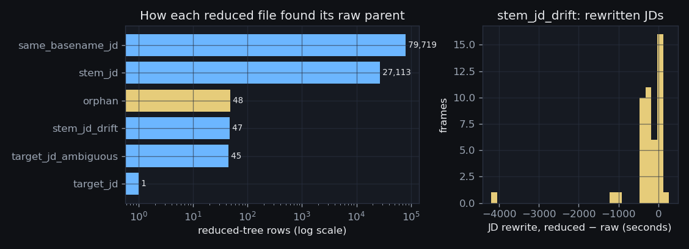
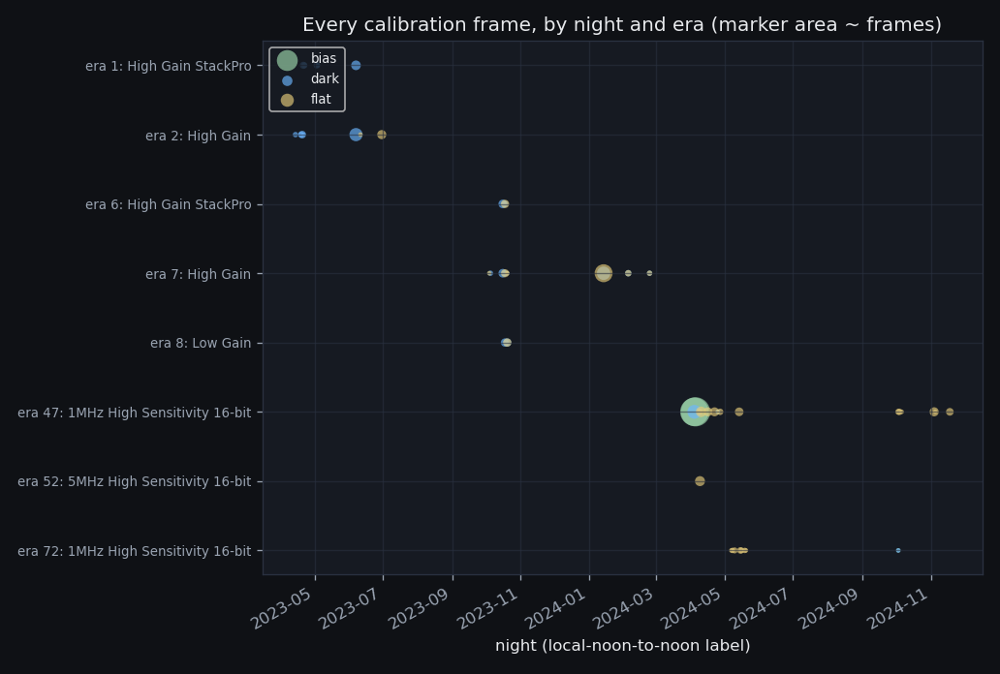
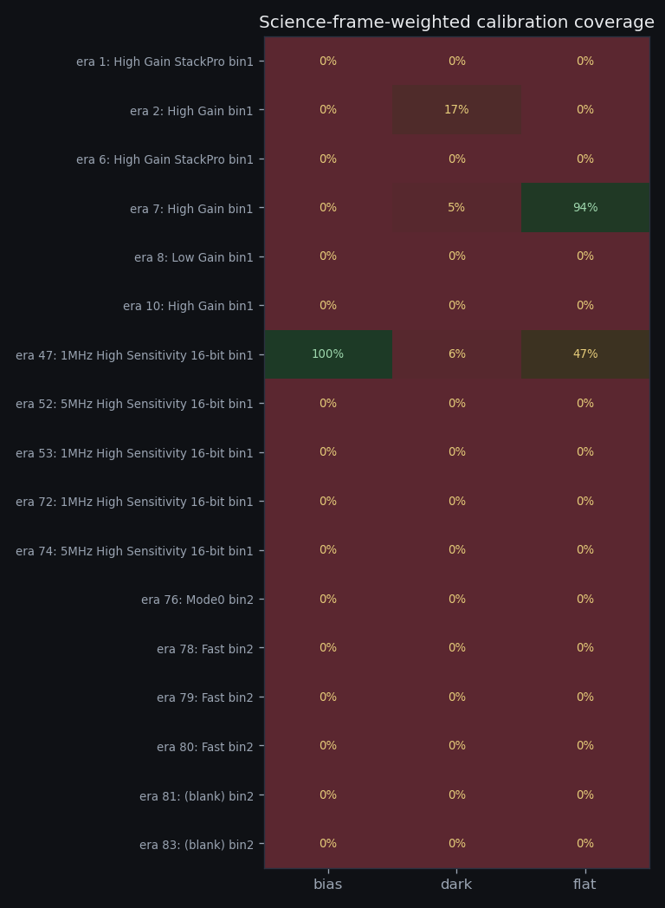

106,925 raw↔reduced links (48 orphans)
· 3,956 calibration frames · 83 science
eras audited · 1,543 open gaps for October ·
built 2026-08-17T20:59Z
(S0b v1.1 (2026-08-17),
commit 38b7162)
· back to the evidence hub
S0 proved the reduced/ tree holds renamed copies
that (basename, JD) dedup cannot see. Can every one of its
106,942 rows be tied to the raw exposure it came from — and what
is left over when we try?

| match method | link rows | reduced frames | meaning |
|---|---|---|---|
same_basename_jd | 79,719 | 79,719 | exact copy — same filename, same JD (S0's own dup_group) |
stem_jd | 27,113 | 27,113 | renamed copy — raw name + processing suffix (_calibrated/_cal/_wcs), JD preserved |
orphan | 48 | 48 | no raw parent found — characterized below |
stem_jd_drift | 47 | 47 | same filename stem, same night, JD REWRITTEN by the reduction pipeline |
target_jd_ambiguous | 45 | 14 | (target, JD) hits several raw frames; every candidate pair recorded |
target_jd | 1 | 1 | fully renamed — matched on (target, JD), the S0 collision-pair evidence |
Raw-side view: of the 165,443 canonical science frames outside the reduced tree, 106,911 have at least one reduced counterpart (64.6%) — the rest were never run through the reduction pipeline (or their products never reached the archive):
| reduced counterparts per raw frame | raw frames |
|---|---|
| 1 | 106,900 |
| 2 | 9 |
| 3 | 1 |
| 4 | 1 |
The 48 orphans, characterized — not hidden:
| orphan population | frames |
|---|---|
| no target name (focus / class / test products) | 48 |
| orphan example (first 10, alphabetical) |
|---|
reduced/2024-11-12/1070_M13_10s_Ha_0_cal.fts.fz |
reduced/2024-11-12/1070_M27_110s_Ha_0_cal.fts.fz |
reduced/2024-11-12/1070_M27_110s_OIII_0_cal.fts.fz |
reduced/2024-11-12/1070_M27_120s_OIII_0_cal.fts.fz |
reduced/2024-11-12/1070_M27_120s_SII_0_cal.fts.fz |
reduced/2024-11-12/1070_M27_180s_Ha_0_cal.fts.fz |
reduced/2024-11-12/1070_M27_180s_OIII_0_cal.fts.fz |
reduced/2024-11-12/1070_M27_220s_SII_0_cal.fts.fz |
reduced/2024-11-12/1070_M27_240s_SII_0_cal.fts.fz |
reduced/2024-11-12/1070_M27_60s_Ha_0_cal.fts.fz |
raw_reduced_links is
the only bridge between the two populations. The match ladder accepts
exactly four kinds of evidence — S0’s own dup_group, a filename stem
with a known processing suffix at the same JD, the same stem on the same
night with a rewritten JD, and the (target, JD) collision pairs S0
handed over — deterministically, strongest first. Orphans are recorded
with NULL raw columns and quarantined from every science count.S1/S2 read pixels from raw canonical paths only; anything already reduced is reachable through the links table when a comparison is wanted. The (target, JD) collision suspect list from S0 is hereby resolved into named, methodical links.
What calibration data does the archive actually hold, and for which cameras?

| kind | raw frames | master products | nights |
|---|---|---|---|
bias | 3,158 | 2 | 4 |
dark | 250 | 101 | 20 |
flat | 335 | 110 | 27 |
| tree | kind | frames |
|---|---|---|
| iKon | bias | 3,158 |
| calib | flat | 324 |
| calib | dark | 140 |
| cmos_tests | dark | 90 |
| iKon | dark | 85 |
| iKon | flat | 84 |
| rawimage | flat | 30 |
| rawimage | dark | 28 |
| mjc | dark | 8 |
| mjc | flat | 7 |
| calib | bias | 2 |
Per era — note which eras appear here at all:
| era | READOUTM | bin | EGAIN | bias | dark | flat | first night | last night |
|---|---|---|---|---|---|---|---|---|
| 1 | High Gain StackPro | 1 | 1.054 | 0 | 34 | 0 | 2023-04-21 | 2023-06-07 |
| 2 | High Gain | 1 | 1.054 | 0 | 84 | 17 | 2023-04-14 | 2023-06-30 |
| 6 | High Gain StackPro | 1 | 1.057 | 0 | 20 | 11 | 2023-10-16 | 2023-10-18 |
| 7 | High Gain | 1 | 1.057 | 0 | 103 | 256 | 2023-10-04 | 2024-02-24 |
| 8 | Low Gain | 1 | 22.744 | 0 | 23 | 11 | 2023-10-18 | 2023-10-20 |
| 47 | 1MHz High Sensitivity 16-bit | 1 | — | 3,159 | 86 | 111 | 2024-04-04 | 2024-11-18 |
| 52 | 5MHz High Sensitivity 16-bit | 1 | — | 0 | 0 | 23 | 2024-04-09 | 2024-04-09 |
| 72 | 1MHz High Sensitivity 16-bit | 1 | 0.0 | 1 | 1 | 16 | 2024-05-07 | 2024-10-03 |
| roadmap cross-check | expected | found |
|---|---|---|
| Mode0 darks at 240 s (T CrB grism exposure) | 0 | 0 |
| StackPro flats — raw frames | 0 | 0 |
| StackPro flats — master products (header may be inherited from the stacking tool) | 0 | 11 — in calib/10-19-23 |
master… products written as
‘Light Frame’, with dark checked before flat
so a flat-field dark stays a dark; the <filter>.flatN
twilight series). ‘Fringe field’ sky exposures remain science
— they calibrate fringing, not the detector. Era identity is joined from
S0’s frames.era_id, never recomputed. Roadmap
cross-checks: no Mode0 240 s dark and no RAW StackPro flat exists;
the 11 master flat products carrying the
StackPro readout string are quarantined evidence for S2’s PTC work
(they claim a readout mode the roadmap says was never flat-fielded — most
likely a header inherited at stacking time, to be settled from pixels,
not headers).The coverage matrix below can now be computed era by era — and the eras absent from the census table are exactly the ones the October shopping list must service.
For each camera era with science frames, which calibration requirements are actually met — to spec, from raw frames?

| era | READOUTM | bin | science frames | bias | dark bins ok | filters ok |
|---|---|---|---|---|---|---|
| 76 | Mode0 | 2 | 68,965 | missing | 0 / 783 | 0 / 10 |
| 7 | High Gain | 1 | 22,079 | missing | 2 / 26 | 9 / 12 |
| 80 | Fast | 2 | 18,149 | missing | 0 / 26 | 0 / 9 |
| 72 | 1MHz High Sensitivity 16-bit | 1 | 17,414 | master_only | 0 / 54 | 0 / 25 |
| 1 | High Gain StackPro | 1 | 12,914 | missing | 0 / 41 | 0 / 12 |
| 78 | Fast | 2 | 8,788 | missing | 0 / 30 | 0 / 13 |
| 6 | High Gain StackPro | 1 | 7,420 | missing | 0 / 15 | 0 / 12 |
| 2 | High Gain | 1 | 3,520 | missing | 2 / 17 | 0 / 12 |
| 83 | (blank) | 2 | 1,831 | missing | 0 / 13 | 0 / 9 |
| 8 | Low Gain | 1 | 771 | missing | 0 / 9 | 0 / 5 |
| 53 | 1MHz High Sensitivity 16-bit | 1 | 720 | missing | 0 / 1 | 0 / 1 |
| 47 | 1MHz High Sensitivity 16-bit | 1 | 674 | ok | 1 / 27 | 3 / 15 |
| 81 | (blank) | 2 | 380 | missing | 0 / 8 | 0 / 7 |
| 10 | High Gain | 1 | 296 | missing | 0 / 1 | 0 / 4 |
| 52 | 5MHz High Sensitivity 16-bit | 1 | 252 | missing | 0 / 7 | 0 / 6 |
| 74 | 5MHz High Sensitivity 16-bit | 1 | 245 | missing | 0 / 33 | 0 / 7 |
| 79 | Fast | 2 | 137 | missing | 0 / 11 | 0 / 9 |
master_only status) because they remain
usable. Scaled-dark fallback is noted only where an era has bias frames
(eras: 47, 72) — without a bias, dark scaling is arithmetic
fiction. Science FILTER strings that collide with the calibration vocabulary (‘dark’/‘bias’/‘flat’ — filter-wheel/header glitches passed through verbatim) keep their matrix cells (1 cell(s), 3 science frames) but are excluded from the shopping list: a flat “in filter dark” is not an acquirable item.Every unmet cell becomes one row of the shopping list below — ranked by the science frames it blocks.
Winer is offline for monsoon until October 2026. When the roof opens, exactly which calibration frames should the first nights acquire — for which camera configuration, in what quantity, and in what order?
The archive’s final science night (2026-07-02) belongs to era(s) 81/82/83 — READOUTM “(blank READOUTM)”, EGAIN 56.0, 2026-06-28 → 2026-07-02 — the state the camera was last seen in and therefore the configuration October’s own science frames will land in. These eras carry 42 open requirements of their own (2,212 frames blocked on bias alone), including the grism-chain flats; top 10:
| era | acquisition spec | science frames blocked | projects affected |
|---|---|---|---|
| 83 | bias x >=20 (have 0) | 1,831 | BeStar_Grism,TCrB_Monitoring |
| 83 | flat g x >=10 (have 0) | 1,123 | — |
| 83 | dark 5s x >=15 (have 0) | 937 | — |
| 81 | bias x >=20 (have 0) | 380 | — |
| 81 | flat g x >=10 (have 0) | 232 | — |
| 83 | dark 30s x >=15 (have 0) | 229 | — |
| 83 | dark 120s x >=15 (have 0) | 214 | — |
| 83 | flat ha x >=10 (have 0) | 136 | — |
| 83 | flat lum x >=10 (have 0) | 116 | — |
| 83 | flat i x >=10 (have 0) | 105 | — |
Across the whole archive: 1,543 unmet requirements; the bias rows alone show 164,769 science frames sitting in eras with no usable bias set. Top 30 by science frames blocked (highlighted rows = the 5 eras whose last science night falls within 60 days of the archive’s final night 2026-07-02 — the current instrument, directly acquirable in October):
| era | READOUTM | bin | science span | acquisition spec | science frames blocked | projects affected | current instrument? |
|---|---|---|---|---|---|---|---|
| 76 | Mode0 | 2 | 2024-12-14 → 2026-03-16 | bias x >=20 (have 0) | 68,965 | BeStar_Grism,CV_TimeSeries,TCrB_Monitoring | — |
| 76 | Mode0 | 2 | 2024-12-14 → 2026-03-16 | flat g x >=10 (have 0) | 40,031 | BeStar_Grism,CV_TimeSeries | — |
| 7 | High Gain | 1 | 2023-10-03 → 2024-03-26 | bias x >=20 (have 0) | 22,079 | CV_TimeSeries,TCrB_Monitoring | — |
| 80 | Fast | 2 | 2026-04-23 → 2026-06-28 | bias x >=20 (have 0) | 18,149 | BeStar_Grism,CV_TimeSeries,TCrB_Monitoring | YES |
| 72 | 1MHz High Sensitivity 16-bit | 1 | 2024-04-15 → 2024-12-10 | bias x >=20 (have 0) | 17,414 | BeStar_Grism,CV_TimeSeries,DwarfGalaxy_AGN_Survey | — |
| 80 | Fast | 2 | 2026-04-23 → 2026-06-28 | flat g x >=10 (have 0) | 13,821 | CV_TimeSeries | YES |
| 1 | High Gain StackPro | 1 | 2023-02-06 → 2023-07-06 | bias x >=20 (have 0) | 12,914 | DwarfGalaxy_AGN_Survey,TCrB_Monitoring | — |
| 76 | Mode0 | 2 | 2024-12-14 → 2026-03-16 | dark 32s x >=15 (have 0) | 10,004 | — | — |
| 78 | Fast | 2 | 2026-03-21 → 2026-06-28 | bias x >=20 (have 0) | 8,788 | BeStar_Grism,CV_TimeSeries,TCrB_Monitoring | YES |
| 76 | Mode0 | 2 | 2024-12-14 → 2026-03-16 | dark 60s x >=15 (have 0) | 7,964 | BeStar_Grism,CV_TimeSeries,TCrB_Monitoring | — |
| 76 | Mode0 | 2 | 2024-12-14 → 2026-03-16 | dark 8s x >=15 (have 0) | 7,599 | BeStar_Grism | — |
| 6 | High Gain StackPro | 1 | 2023-10-03 → 2024-03-19 | bias x >=20 (have 0) | 7,420 | CV_TimeSeries,TCrB_Monitoring | — |
| 76 | Mode0 | 2 | 2024-12-14 → 2026-03-16 | flat i x >=10 (have 0) | 7,325 | BeStar_Grism,CV_TimeSeries | — |
| 1 | High Gain StackPro | 1 | 2023-02-06 → 2023-07-06 | flat R x >=10 (have 0) | 7,217 | DwarfGalaxy_AGN_Survey,TCrB_Monitoring | — |
| 76 | Mode0 | 2 | 2024-12-14 → 2026-03-16 | flat hrg x >=10 (have 0) | 7,202 | BeStar_Grism,TCrB_Monitoring | — |
| 76 | Mode0 | 2 | 2024-12-14 → 2026-03-16 | flat r x >=10 (have 0) | 7,168 | BeStar_Grism,CV_TimeSeries,TCrB_Monitoring | — |
| 7 | High Gain | 1 | 2023-10-03 → 2024-03-26 | dark 32s x >=15 (have 0) | 6,621 | CV_TimeSeries,TCrB_Monitoring | — |
| 76 | Mode0 | 2 | 2024-12-14 → 2026-03-16 | dark 1s x >=15 (have 0) | 6,540 | BeStar_Grism | — |
| 76 | Mode0 | 2 | 2024-12-14 → 2026-03-16 | dark 30s x >=15 (have 0) | 5,998 | BeStar_Grism,CV_TimeSeries | — |
| 80 | Fast | 2 | 2026-04-23 → 2026-06-28 | dark 10s x >=15 (have 0) | 5,962 | — | YES |
| 78 | Fast | 2 | 2026-03-21 → 2026-06-28 | flat g x >=10 (have 0) | 5,032 | CV_TimeSeries | YES |
| 1 | High Gain StackPro | 1 | 2023-02-06 → 2023-07-06 | dark 64s x >=15 (have 10) | 4,982 | TCrB_Monitoring | — |
| 76 | Mode0 | 2 | 2024-12-14 → 2026-03-16 | flat lrg x >=10 (have 0) | 4,551 | BeStar_Grism,TCrB_Monitoring | — |
| 80 | Fast | 2 | 2026-04-23 → 2026-06-28 | dark 5s x >=15 (have 0) | 4,301 | — | YES |
| 76 | Mode0 | 2 | 2024-12-14 → 2026-03-16 | dark 120s x >=15 (have 0) | 4,121 | BeStar_Grism,CV_TimeSeries | — |
| 7 | High Gain | 1 | 2023-10-03 → 2024-03-26 | dark 8s x >=15 (have 0) | 4,120 | CV_TimeSeries | — |
| 72 | 1MHz High Sensitivity 16-bit | 1 | 2024-04-15 → 2024-12-10 | dark 30s x >=15 (have 0) | 4,043 | CV_TimeSeries | — |
| 72 | 1MHz High Sensitivity 16-bit | 1 | 2024-04-15 → 2024-12-10 | flat g x >=10 (have 0) | 3,780 | BeStar_Grism,CV_TimeSeries,DwarfGalaxy_AGN_Survey | — |
| 1 | High Gain StackPro | 1 | 2023-02-06 → 2023-07-06 | dark 32s x >=15 (have 10) | 3,745 | DwarfGalaxy_AGN_Survey,TCrB_Monitoring | — |
| 72 | 1MHz High Sensitivity 16-bit | 1 | 2024-04-15 → 2024-12-10 | flat r x >=10 (have 0) | 3,608 | BeStar_Grism,CV_TimeSeries,DwarfGalaxy_AGN_Survey | — |
The T CrB-critical subset (the 247 archival grism spectra are Mode0 240 s exposures with zero matching darks — the roadmap’s known debt, now a ranked line item):
| era | READOUTM | spec | science frames blocked |
|---|---|---|---|
| 76 | Mode0 | bias x >=20 (have 0) | 68,965 |
| 7 | High Gain | bias x >=20 (have 0) | 22,079 |
| 80 | Fast | bias x >=20 (have 0) | 18,149 |
| 1 | High Gain StackPro | bias x >=20 (have 0) | 12,914 |
| 78 | Fast | bias x >=20 (have 0) | 8,788 |
| 76 | Mode0 | dark 60s x >=15 (have 0) | 7,964 |
ops/2026-08_observatory_request.md) cites this section as
its calibration annex.When the October frames land, the archive sync + S0 + S0b re-run (idempotent, atomic) regenerates this page; acquired rows fall off the shopping list automatically, and any requirement still unmet stays visible. New-era science (ST LMi g/r/i season, T CrB restart) joins the matrix as first-class rows on the same re-run.
{kind=link}
{kind=link}
{kind=link}